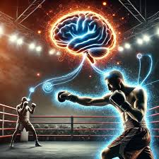

El boxeo exige una gran fortaleza mental. Los atletas deben controlar sus emociones antes, durante y después de cada combate. El miedo, la presión del público y la responsabilidad de representar a su equipo son desafíos constantes.
La confianza en uno mismo es un factor decisivo. Un boxeador seguro de sus habilidades puede reaccionar con mayor rapidez y tomar mejores decisiones bajo presión.
Además de la preparación física, muchos entrenadores incluyen técnicas de visualización, concentración y manejo del estrés para mejorar el rendimiento competitivo.
